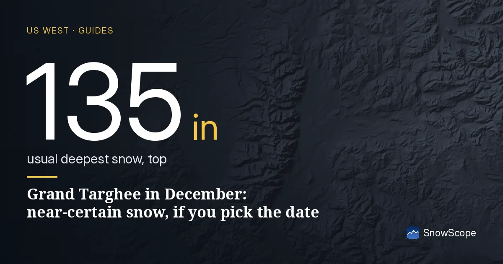
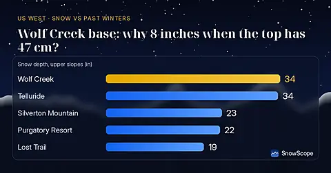

Grand Targhee in December: near-certain snow, if you pick the date
Grand Targhee's mid-mountain elevation guarantees deep December snow almost every winter: 46 in (118 cm) on a typical 15 December, with every single winter in the past 46 years reaching at least 20 in (50 cm). The real decision for your wallet is not whether snow will be there, but which week you book.
See the live snow forecast for Grand Targhee Resort in the SnowScope appSnow depth, powder alerts and the 3D map, free.
How deep by when
At mid-mountain, around 8,720 ft (2,658 m), expect 32 in (81 cm) on 1 December, then 46 in (118 cm) by the 15th, and 52 in (131 cm) by Christmas. The top, near 9,840 ft (3,000 m), reaches 70 in (179 cm) by mid-December. Even in a lean year (one winter in ten), mid-mountain still holds 31 in (79 cm) on the 15th.
Early December is a solid bet: 54 % of winters have good snow in the first week. By the second week that climbs to 76 %, and weeks three and four jump to 89 % and 93 %. Lasting snow usually arrives in early October, so the base is thick by the time you arrive.

Timing the ticket price
Single-day lift tickets online run from $125 to $180 depending on the date; walk-up costs $10 more. The key is that pre-holiday December dates sit at the lower end. The ski area opens 20 November and runs holiday pricing from 24 December to 3 January, when you pay top dollar.
That leaves almost four weeks of early-to-mid December at better rates. Multi-day passes become cheaper per day as you buy more, so a three- or four-day trip spreads the cost further. The maths favours booking early December online if your schedule allows.

How this compares nearby
Snow King, Jackson's town hill, starts at $100 per day but averages only 28 in (71 cm) at mid-mountain on 15 December, with good snow in just 87 % of winters. Cheaper entry, thinner base.
Jackson Hole Mountain Resort, the valley's largest area, averages 37 in (93 cm) at mid-mountain on the same date. That is 9 in (23 cm) less than Targhee at the same height. On December snow, Targhee outranks both.
Where to stay
Targhee sits above Driggs on the Idaho side of the Tetons. Most visitors base themselves in Driggs (closer and quieter) or Jackson (more choice, but across Teton Pass). The pass is steep and closes in storms, so check conditions before you drive.
We did not compare lodging costs, but the Idaho side tends to offer fewer but more affordable options. Jackson has more variety at all price points.
Is the snow as reliable as before
Mostly yes, but with a slight decline. In winters from 1980-81 to 1994-95, mid-mountain averaged 51 in (130 cm) on 15 December. In the last 15 winters, that dropped to 40 in (102 cm). Yet all winters in both periods stayed above 20 in (50 cm).
Last season was a lean one, arriving with just 24 in (62 cm) on mid-December at mid-mountain. That is enough to ski groomed runs, but noticeably thinner than the typical 46 in (118 cm). Early December this season sits at only 2 in (5 cm) right now, so the mountain will fill in through the month.
What to bring
December at Targhee is cold and high. The top of the mountain sits at 9,840 ft (3,000 m) and receives consistent snow. Pack base layers, a waterproof jacket, and goggles for wind. The upper slopes stay skiable well into spring because of the height and total accumulation.
Early December can see freeze-thaw cycles on south-facing runs at mid-mountain if the sun is strong. Ski higher or face north if you want consistent corn. By mid-December, sustained cold locks in the base.
Tips for skiers
- Book your early December dates online at least two weeks ahead to lock in the lower ticket price; walk-up windows cost $10 more and have less certainty on availability.
- If you plan two or more days, buy a multi-day ticket or pass: the per-day cost drops significantly compared to single-day tickets.
- Ski mid-mountain or higher in early December when the base is thin; the extra 500 ft (150 m) of elevation makes a 15–20 in (38–50 cm) difference in snow depth and stability.
- Before driving from Jackson, check Teton Pass conditions: it closes in heavy snow and storms. The Idaho side is steeper than you might expect.
- Read the Bridger-Teton Avalanche Center forecast before skiing off-piste, especially on steep north-facing slopes where slabs can form after fresh snow.
About these numbers
Resort snow depths are the deepest snow on the resort's upper slopes on the date shown; they are estimates for an area, not a measurement at one point. Forecasts can change. Always read the official avalanche bulletin before going off-piste.
Official avalanche bulletins: Bridger-Teton Avalanche Center
Cite this report
For research, teaching or the press: the numbers and charts are free to reuse under CC BY 4.0 with this citation.
SnowScope (2026), Grand Targhee in December: near-certain snow, if you pick the date, https://snowscope.app/blog/en/2026/11/grand-targhee-december-snow-and-ticket-prices.html, accessed 2026-11-14
SnowScope (Atlas Labs). (2026, November 14). Grand Targhee in December: near-certain snow, if you pick the date. SnowScope snow reports. https://snowscope.app/blog/en/2026/11/grand-targhee-december-snow-and-ticket-prices.html
BibTeX
@misc{snowscope2026grandtargheedecembersnow,
author = {{SnowScope (Atlas Labs)}},
title = {Grand Targhee in December: near-certain snow, if you pick the date},
year = {2026},
month = nov,
howpublished = {\url{https://snowscope.app/blog/en/2026/11/grand-targhee-december-snow-and-ticket-prices.html}},
note = {Published 2026-11-14 13:57 UTC; accessed 2026-11-14}
}· CC BY 4.0 · Methods, data and tools →
Grand Targhee Resort: snow and temperature by height, this winter vs last (tools) →
Follow Grand Targhee Resort
Free: a message when fresh snow is coming, and the forecast every morning.
More snow reports

Wolf Creek's base sits at only 3 in (8 cm) while its summit holds 19 in (47 cm) on 11 November, a 15 in (39 cm) gap shaped by freezing level.

Where should you go skiing in the US West? Three inputs, one shortlist: today's snow depth, the new snow of the last 72 hours and the forecast point …